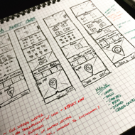
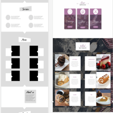

Mandys
The goal of Mandy's was to create a modern/hip feeling yet classy an sophisticated web site which would be appealing to all age groups. Displaying all avalaible products and services was a priority ensuring all visitors could find what they need without having to jump through pages to find it.

During the wireframe sketch session I like to get all the major ideas out and to see what looks good and ideal for your site.

While making the Hi resolution mockup yo can begin to see what really does work and what does not. At this point we can begin to start making adjustments according to your needs.
Technology used
Html
sass | css
Javascript
sketchapp
codekit